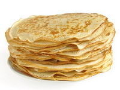

ht046 : recette de crepes

Crepes
temps de préparation
5 minutes
temps de cuisson
5 minutes
Ingrédients (pour 6 personnes)
- 375 g de farine
- 4 oeufs
- 2 cuillères à soupe d'huile
- 2 pincées de sel
- 50 cl de lait
- 25 cl de bière
- 2 cuillères à soupe de rhum
- 20 g de beurre
Préparation de la recette
- Mélanger la farine et les oeufs.
- Ajouter l'huile, le sel, le lait et la bière.
- Incorporer le rhum et le beurre.
- Faire chauffer une poêle et verser une louche de pâte.
- Cuisson sur les deux faces jusqu'à ce que les crêpes soient dorées.
Suggestion
Suggestions d'accompagnement : nature, au sucre (un zeste de citron accompagne très bien), au chocolat fondu, à la confiture, à la pâte à tartiner...
Je vous laisse en inventer d'autres !
Conseil vin
Cidre ou champagne
marmiton.org
Remonter en début de page